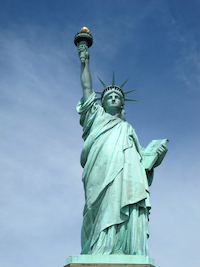

my favorite city is New York City because of its unmatched cultural diversity, serving as a global hub for finance, fashion, and entertainment with iconic landmarks like the Statue of Liberty, Broadway, and Central Park. The city is a center of incredible innovation and opportunity, fostering a unique atmosphere that is sometimes called "The City That Never Sleeps
